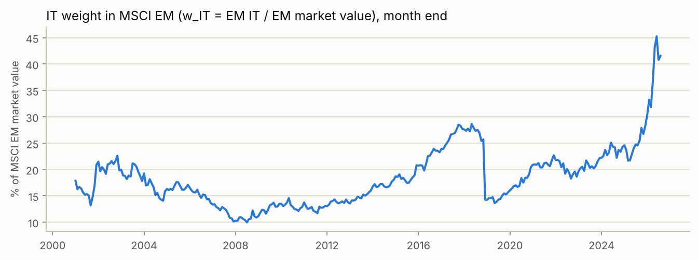
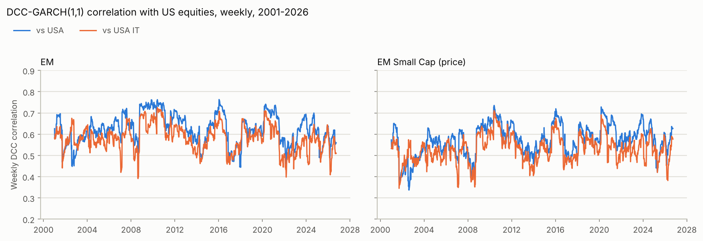
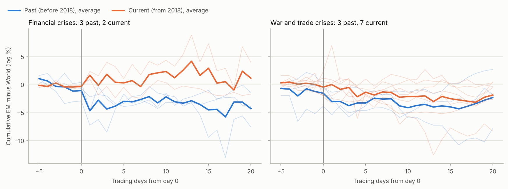
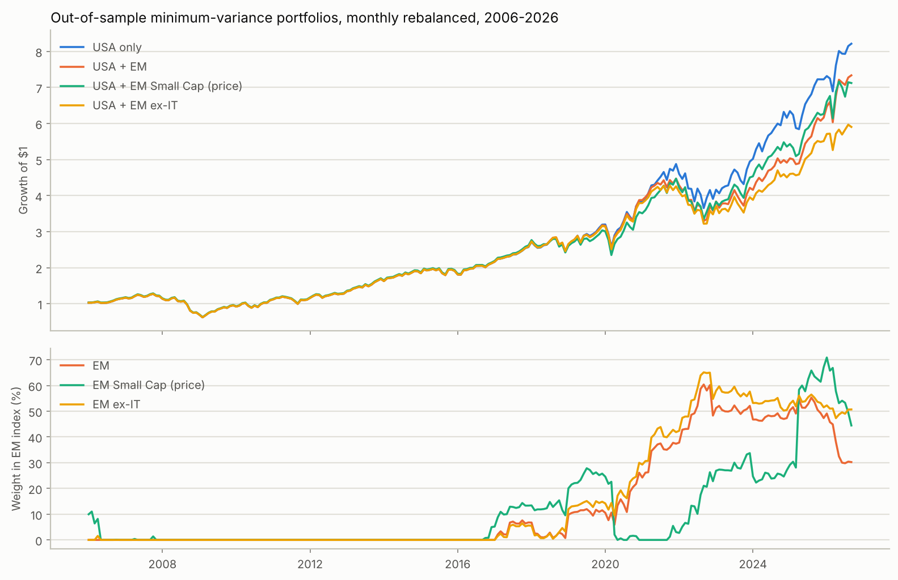

Results of the four-step analysis on MSCI data from January 2001 to September 2026, with the focus on Question 2: does EM do better relative to developed markets in today's war and trade crises than in past crises?
EM's relative performance in today's war and trade crises is not significantly different from past crises (γ4 = 0.19, t = 0.16). What moves it is mainly the dollar. Recent shocks come with a stronger dollar and weaker EM currencies, which costs EM about as much as its larger tech weight gains.
EM has not become more like the US. Weekly correlation with US equities stays around 0.6 with no trend. After the one structural break (Oct 2009), EM's beta to the US fell from 1.30 to 0.85. A higher IT weight is not linked to more US sensitivity.
For a US investor, minimum-variance weights gave EM 0% from 2006 to 2016, then about 50% from 2022. Over 2006–2026, adding EM barely lowered volatility (15.2% to 15.1%), and the Sharpe ratio fell from 0.63 to 0.60.

The DCC-GARCH(1,1) model (a = 0.026, b = 0.951) tracks weekly correlations. EM's correlation with the US moves between about 0.45 and 0.75. It peaked in 2009–10 and in 2020, and was 0.57–0.58 on average in 2025–26. Correlation with US IT is lower than with the US as a whole, which does not fit the idea of EM tracking US tech. EM Small Cap moves the same way at a slightly lower level.

The Bai–Perron test finds one significant break in EM's relation to US returns: the last month of the old regime is October 2009 (supF = 17.2 against a 5% critical value of 11.47; the BIC also picks one break). In equation (1), δ is negative, not positive. EM's beta to the US was 1.30 before the break and 0.85 after it (δ = −0.45, t = −3.6). EM ex-IT and EM Small Cap show the same fall. Replacing Post with the lagged IT weight also gives a negative δ. In non-crisis months it is not significant. So the growing tech weight did not make EM more sensitive to US returns.
| Dependent | Interaction | Sample | Months | β | δ | t(δ) | R² |
|---|---|---|---|---|---|---|---|
| EM | Post | All months | 309 | 1.30 | −0.45*** | −3.57 | 0.587 |
| EM | Post | Non-crisis months | 140 | 1.68 | −0.93*** | −2.58 | 0.397 |
| EM | wIT,t−1 | All months | 309 | 1.60 | −3.33* | −1.67 | 0.577 |
| EM | wIT,t−1 | Non-crisis months | 140 | 1.08 | −1.20 | −0.55 | 0.350 |
| EM ex-IT | Post | All months | 309 | 1.26 | −0.51*** | −3.46 | 0.536 |
| EM ex-IT | Post | Non-crisis months | 140 | 1.76 | −1.04*** | −2.96 | 0.365 |
| EM ex-IT | wIT,t−1 | All months | 309 | 1.93 | −5.62*** | −3.92 | 0.549 |
| EM ex-IT | wIT,t−1 | Non-crisis months | 140 | 1.29 | −2.51 | −1.15 | 0.312 |
| EM Small Cap (price) | Post | All months | 309 | 1.27 | −0.37** | −2.05 | 0.563 |
| EM Small Cap (price) | Post | Non-crisis months | 140 | 1.54 | −0.73** | −2.22 | 0.430 |
| EM Small Cap (price) | wIT,t−1 | All months | 309 | 1.80 | −4.35** | −2.24 | 0.571 |
| EM Small Cap (price) | wIT,t−1 | Non-crisis months | 140 | 0.94 | −0.27 | −0.13 | 0.399 |
| EM (price) | Post | All months | 309 | 1.30 | −0.45*** | −3.53 | 0.586 |
| EM (price) | Post | Non-crisis months | 140 | 1.68 | −0.92** | −2.56 | 0.398 |
| EM (price) | wIT,t−1 | All months | 309 | 1.60 | −3.33* | −1.66 | 0.577 |
| EM (price) | wIT,t−1 | Non-crisis months | 140 | 1.08 | −1.24 | −0.57 | 0.351 |
Equation (1): rEM = α + β rUS + δ (interaction × rUS). wIT,t−1 is a fraction, so δ is the change in beta per 100 percentage points of IT weight. Non-crisis months: Fin = 0 and Geo = 0 (140 months). * 10%, ** 5%, *** 1%.
We regress EM's monthly return relative to MSCI World on the two crisis types and their interaction with the current period:
γ4 is the core test. It measures how much better (positive) or worse EM does relative to World in a war or trade crisis month today than in one in the past, in percentage points per month. γ3 does the same for financial crises. Xt holds the monthly changes in the VIX and the dollar index (DXY). The sample has 116 past and 18 current Fin months, and 16 past and 37 current Geo months.
| Panel A · Current = 1 from Jan 2018 | Panel B · Current = 1 from Jan 2022 | |||||||||
|---|---|---|---|---|---|---|---|---|---|---|
| (1) EM | (2) EM + X | (3) EM ex-IT | (4) EM ex-IT + X | (5) EM local ccy | (6) EM local ccy + X | (7) EM | (8) EM + X | (9) EM ex-IT | (10) EM ex-IT + X | |
| γ1 Fin | 0.00 (0.00) | 0.05 (0.12) | 0.03 (0.06) | 0.10 (0.21) | 0.13 (0.38) | 0.14 (0.41) | 0.12 (0.27) | 0.15 (0.37) | 0.13 (0.30) | 0.18 (0.42) |
| γ2 Geo | 0.07 (0.07) | -0.07 (-0.06) | 0.03 (0.04) | -0.10 (-0.11) | -0.04 (-0.03) | 0.16 (0.14) | -0.50 (-0.74) | -0.57 (-0.75) | -0.43 (-0.77) | -0.48 (-0.77) |
| γ3 Fin × Current | -0.03 (-0.04) | 0.03 (0.05) | 0.16 (0.19) | 0.23 (0.27) | 0.22 (0.34) | 0.21 (0.35) | -0.32 (-0.50) | -0.21 (-0.32) | -0.08 (-0.11) | 0.05 (0.05) |
| γ4 Geo × Current | 0.19 (0.16) | 0.40 (0.31) | -0.25 (-0.25) | -0.04 (-0.04) | 0.55 (0.44) | 0.33 (0.26) | 1.32 (1.52) | 1.45 (1.63) | 0.54 (0.68) | 0.66 (0.87) |
| γ1+γ3 (current Fin) | -0.03 (-0.04) | 0.09 (0.14) | 0.19 (0.25) | 0.32 (0.41) | 0.36 (0.57) | 0.35 (0.65) | -0.20 (-0.35) | -0.06 (-0.10) | 0.05 (0.07) | 0.23 (0.27) |
| γ2+γ4 (current Geo) | 0.26 (0.45) | 0.33 (0.62) | -0.22 (-0.41) | -0.14 (-0.30) | 0.51 (1.06) | 0.48 (1.02) | 0.82 (1.43) | 0.88* (1.69) | 0.11 (0.19) | 0.18 (0.36) |
| θ Post | -1.51*** (-3.12) | -1.32*** (-2.88) | -1.84*** (-3.63) | -1.59*** (-3.35) | -1.31*** (-3.60) | -1.26*** (-3.32) | -1.57*** (-3.38) | -1.38*** (-3.08) | -1.88*** (-3.86) | -1.63*** (-3.52) |
| φ ΔVIX | 0.02 (0.39) | 0.06 (0.97) | 0.13*** (2.75) | 0.02 (0.36) | 0.06 (0.95) | |||||
| φ ΔDXY | -0.43*** (-3.93) | -0.53*** (-4.83) | 0.01 (0.09) | -0.43*** (-3.89) | -0.53*** (-4.81) | |||||
| α constant | 1.09** (2.29) | 0.92** (2.05) | 1.19** (2.38) | 0.98** (2.09) | 0.95*** (2.61) | 0.91** (2.48) | 1.09** (2.30) | 0.93** (2.07) | 1.19** (2.39) | 0.98** (2.10) |
| R² | 0.041 | 0.109 | 0.062 | 0.156 | 0.044 | 0.092 | 0.047 | 0.115 | 0.062 | 0.157 |
| Months | 309 | 309 | 309 | 309 | 309 | 309 | 309 | 309 | 309 | 309 |
Dependent variable: monthly log return of the named index minus MSCI World (USD net), in %. Coefficients with Newey–West t-statistics in brackets. "+ X" adds ΔVIX (points) and ΔDXY (%). Columns 5–6 use EM in local currency, still minus World in USD. Panel B moves the start of the current period to 2022. * 10%, ** 5%, *** 1%.
Cumulative daily EM-minus-World log returns from 5 trading days before to 20 days after each named crisis. Day 0 is the first trading day on or after the event. The two decomposition columns split the 26-day result into a currency part (EM in USD minus EM in local currency; negative means EM currencies fell against the dollar) and a tech part (EM minus EM ex-IT).
| Crisis | Day 0 | CAR[−5, 0] | CAR[−5, +5] | CAR[−5, +20] | of which currency | Local-ccy CAR[−5, +20] | EM ex-IT CAR[−5, +20] | of which tech |
|---|---|---|---|---|---|---|---|---|
| Past financial crises (before 2018) | ||||||||
| Lehman bankruptcy | 2008-09-15 | −3.00 | −1.75 | −7.61 | −8.18 | +0.58 | −8.86 | +1.26 |
| US downgrade / euro crisis | 2011-08-08 | +0.33 | −3.45 | −1.47 | −2.83 | +1.35 | −1.35 | −0.13 |
| China devaluation | 2015-08-11 | −0.75 | −3.98 | −3.97 | −3.78 | −0.20 | −4.53 | +0.55 |
| Average of 3 | −1.14 | −3.06 | −4.35 | −4.93 | +0.58 | −4.91 | +0.56 | |
| Current financial crises (from 2018) | ||||||||
| COVID crash | 2020-02-24 | −0.50 | +1.00 | +3.92 | −5.47 | +9.39 | +3.51 | +0.41 |
| SVB collapse | 2023-03-10 | −0.27 | −0.55 | −1.77 | +0.44 | −2.22 | −2.24 | +0.47 |
| Average of 2 | −0.38 | +0.23 | +1.07 | −2.51 | +3.59 | +0.63 | +0.44 | |
| Past war crises (before 2018) | ||||||||
| 9/11 attacks | 2001-09-11 | −0.24 | −3.85 | −7.92 | −3.27 | −4.65 | −5.93 | −1.98 |
| Iraq invasion | 2003-03-20 | −3.94 | −4.73 | −1.87 | +3.04 | −4.91 | −1.03 | −0.84 |
| Crimea annexation | 2014-03-03 | −0.67 | −1.50 | +2.65 | +1.43 | +1.22 | +2.94 | −0.29 |
| Average of 3 | −1.62 | −3.36 | −2.38 | +0.40 | −2.78 | −1.34 | −1.04 | |
| Current war crises (from 2018) | ||||||||
| Russia invades Ukraine | 2022-02-24 | −2.32 | −2.06 | −8.38 | −1.53 | −6.84 | −8.71 | +0.33 |
| Hamas attack on Israel | 2023-10-09 | −2.05 | −1.82 | +0.42 | +0.87 | −0.45 | −0.44 | +0.86 |
| Israel-Iran war | 2025-06-13 | +0.46 | +0.91 | +0.24 | +0.36 | −0.12 | −1.59 | +1.83 |
| Average of 3 | −1.30 | −0.99 | −2.57 | −0.10 | −2.47 | −3.58 | +1.01 | |
| Current trade conflicts (from 2018) | ||||||||
| US Section 301 China tariffs | 2018-03-22 | +1.09 | −0.90 | −2.09 | −0.63 | −1.46 | −1.07 | −1.01 |
| US-China tariff escalation | 2019-05-06 | −1.14 | −1.86 | −0.61 | −0.53 | −0.08 | −0.13 | −0.47 |
| Yuan breaks 7 / new tariffs | 2019-08-05 | −1.98 | −2.81 | −2.72 | −2.43 | −0.30 | −3.06 | +0.34 |
| 'Liberation Day' tariffs | 2025-04-03 | +2.29 | −1.43 | −0.43 | +1.38 | −1.81 | +0.91 | −1.34 |
| Average of 4 | +0.06 | −1.75 | −1.46 | −0.55 | −0.91 | −0.84 | −0.62 | |
| Current war and trade together (= Geo in equation 2) | ||||||||
| Average of 7 | −0.52 | −1.42 | −1.94 | −0.36 | −1.58 | −2.01 | +0.08 | |
All values in log %. Local-ccy CAR = CAR minus the currency part. Daily EM ex-IT uses the IT weight at the previous month end.

| Months flagged | Months | EM − World | Currency part | Tech part | ΔDXY % | ΔVIX pts | IT weight % |
|---|---|---|---|---|---|---|---|
| Non-crisis | 140 | −0.07 | −0.03 | +0.14 | −0.00 | +0.08 | 18.6 |
| Fin, past | 116 | +0.56 | −0.06 | −0.01 | −0.15 | −0.12 | 15.3 |
| Fin, current | 18 | −0.42 | −0.47 | +0.07 | +0.34 | −0.03 | 19.8 |
| Geo, past | 16 | +1.16 | +0.11 | −0.10 | −0.66 | −1.21 | 18.8 |
| Geo, current | 37 | −0.16 | −0.33 | +0.69 | +0.25 | +0.10 | 26.6 |
Average monthly values (in %, ΔVIX in points) in each set of flagged months; a month can be both Fin and Geo. Currency part = EM in USD minus EM in local currency. Tech part = EM minus EM ex-IT. IT weight at the previous month end.
EM's relative performance in today's war and trade crises is about the same as in past crises. Whether it does better or worse depends mainly on the dollar: today's shocks have come with a stronger dollar and weaker EM currencies, and the larger tech weight only partly offsets this.
A US investor holds MSCI USA and adds one EM index. Minimum-variance weights are re-estimated each month from the previous 60 months, long-only, and evaluated out of sample from January 2006 to September 2026 (249 months). Because EM was much more volatile than the US and highly correlated with it, the minimum-variance weight on every EM index was 0% from 2006 to 2016. These portfolios are therefore identical to USA only through the 2008 crisis, which is why they share the same maximum drawdown. As EM's beta and volatility fell, the weight rose to about 50% from 2022.
| Portfolio | Return %/yr | Volatility %/yr | Sharpe | Max drawdown % | Avg return, current Fin months % | Avg return, current Geo months % | Avg EM weight % | EM weight Sep 2026 % |
|---|---|---|---|---|---|---|---|---|
| USA only | 10.68 | 15.21 | 0.63 | −51.12 | −0.88 | +0.66 | – | – |
| USA + EM | 10.08 | 15.07 | 0.60 | −51.12 | −1.15 | +0.80 | 14.1 | 30.2 |
| USA + EM Small Cap (price) | 9.92 | 15.36 | 0.58 | −51.12 | −1.07 | +0.53 | 10.8 | 44.5 |
| USA + EM ex-IT | 8.93 | 14.70 | 0.54 | −51.12 | −1.26 | +0.43 | 16.1 | 50.7 |
| USA + EM (price) | 9.71 | 15.06 | 0.58 | −51.12 | −1.25 | +0.74 | 14.2 | 30.5 |
Sharpe ratio uses the 3-month T-bill. No past Geo months fall in the out-of-sample period (all are 2001–2005), so only current crisis-month averages are shown. EM Small Cap and EM (price) exclude dividends and understate returns; compare them with each other.

Adding EM lowered volatility only slightly (EM ex-IT the most, to 14.7%) and lowered the Sharpe ratio in every case. In current Geo months the USA + EM did slightly better than USA only (+0.80% vs +0.66% a month), while USA + EM ex-IT and USA + EM Small Cap did slightly worse. In current financial-crisis months every portfolio with EM did worse than USA only.